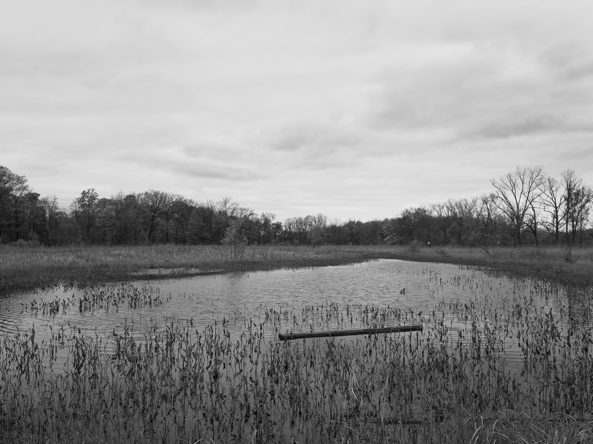
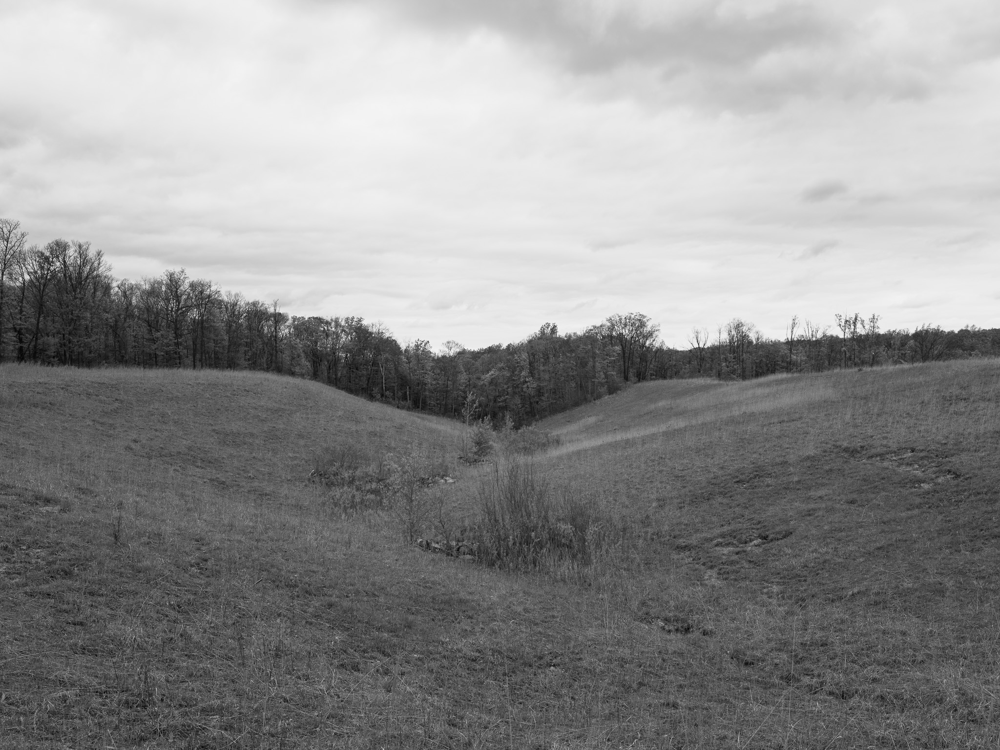

Public Lands Institute
Sites
Archive
Krejci Dump, Cuyahoga Valley National Park
OH
Krejci Dump, Cuyahoga Valley National Park 1 · 2026-05-13
_DSF2098.jpg
Krejci Dump, Cuyahoga Valley National Park 2 · 2026-05-13
_DSF2102.jpg

Krejci Dump, Cuyahoga Valley National Park 3 · 2026-05-13
_DSF2105.jpg
Krejci Dump, Cuyahoga Valley National Park 4 · 2026-05-13
_DSF2109.jpg

Krejci Dump, Cuyahoga Valley National Park 5 · 2026-05-13
_DSF2110.jpg
View all 5 images
← Cuyahoga Valley National Park
Flint Ridge State Memorial →